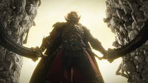
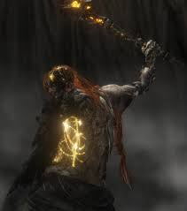
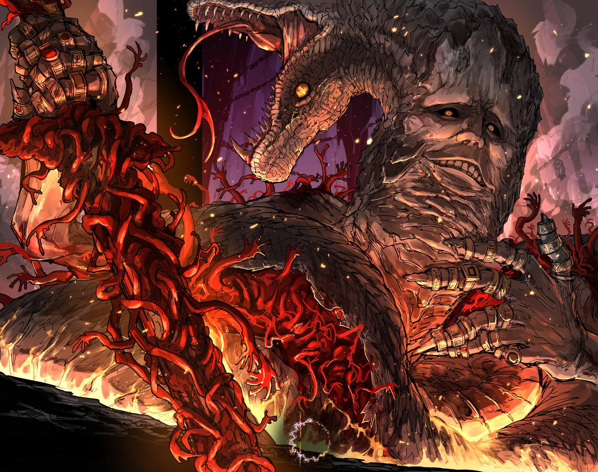

Les boss d'Elden Ring

Radhan

Dans l'univers vaste et complexe d'Elden Ring, Radahn, le Chevalier Étoilé, se dresse comme une figure
légendaire à la fois redoutée et vénérée. Sa stature imposante et sa puissance démesurée font de lui l'un
des antagonistes les plus fascinants du jeu. Radahn n'est pas simplement un boss ; il incarne une tragédie
épique et une profondeur narrative qui enrichissent l'expérience de jeu.
Radahn, fils du Grand Roi, est un guerrier dont la force semble presque mythologique. Autrefois, il était un
héros craint et respecté dans le Royaume de Caelid, où il menait ses troupes avec une ferveur inébranlable.
Les visiteurs qui cherchent à rencontrer Radhan doivent souvent entreprendre un voyage ardu à travers des
montagnes escarpées et des forêts denses. À ceux qui réussissent à le trouver, il offre une sagesse inestimable,
souvent sous la forme d'énigmes et de paraboles. Ses enseignements ne sont pas toujours faciles à comprendre,
mais ceux qui persévèrent découvrent des vérités profondes sur l'univers et leur propre existence.
adhan est aussi le protecteur d'un savoir ancien, gardien des secrets oubliés par le temps. On dit
que dans son sanctuaire, des rouleaux poussiéreux contiennent les clés pour comprendre les mystères de la vie et de
l’univers. Les chercheurs de vérité affluent de tous horizons, espérant déchiffrer ces écrits et en extraire des
connaissances qui pourraient changer le cours de l’histoire. Pour beaucoup, Radhan est une figure inspirante, incarnant
la quête perpétuelle de sagesse et d’harmonie avec le cosmos. Son influence se fait sentir non seulement à travers ses
paroles et ses prophéties, mais aussi dans la manière dont il a su transcender les limites du monde matériel pour toucher les étoiles.
click ici pour son wiki
Radagon

Au cœur du monde mystérieux et envoûtant d'Elden Ring, Radagon se dresse comme une figure emblématique dont
l'aura majestueuse et le destin tragique façonnent profondément l'univers du jeu. Radagon, le Seigneur des Étoiles,
incarne à la fois la puissance et la complexité d'une figure royale qui transcende les limites du pouvoir et de la destinée.
Radagon est le personnage central autour duquel gravitent les grands événements du royaume. Roi de l'ancienne dynastie et époux
de la déesse Marika, il joue un rôle crucial dans l'histoire du monde.a grandeur de Radagon est aussi marquée par ses luttes internes.
Confronté aux ténèbres croissantes et aux forces chaotiques qui menaçaient l'ordre établi, il a été forcé de prendre des décisions difficiles
et de faire des sacrifices considérables. Sa quête pour préserver la stabilité du monde l'a conduit sur des chemins obscurs, et son propre destin s’est
retrouvé entaché par des actes de désespoir et de détermination. Le personnage de Radagon est aussi lié à l'un des éléments les plus mystérieux du jeu
: l’Éclat des Étoiles. En tant que Régisseur des Étoiles, il détenait la capacité unique de canaliser cette énergie cosmique, lui conférant des pouvoirs
incommensurables. Mais cette connexion avec les étoiles a également eu des conséquences imprévues, influençant les forces surnaturelles et les êtres
qui l’entourent. Dans Elden Ring, Radagon apparaît comme un antagoniste complexe, une figure dont les actions sont motivées par des objectifs à la fois nobles
et désespérés. Les joueurs qui s’aventurent dans son domaine découvriront un personnage dont la force et la vulnérabilité se mêlent pour créer une légende qui
transcende les simples récits de conquête et de pouvoir.
click ici pour son wiki
Rykard

Dans le monde mystérieux et tumultueux d'Elden Ring, Rykard émerge comme une figure emblématique, enveloppée de mystère et
de terreur. Anciennement un roi puissant et redouté, Rykard a choisi un chemin sinueux qui le place au cœur des ténèbres et des
secrets occultes. Sa transformation en Seigneur des Serpents est une des intrigues les plus fascinantes et inquiétantes du jeu.
Rykard, autrefois souverain d'un royaume prospère, est devenu une légende par son choix radical de pouvoir et d'immortalité.
Au lieu de se contenter de régner sur ses terres et de mener une vie de gloire éphémère, il a recherché un pouvoir plus profond et
plus pernicieux. Cette quête l'a conduit à s'unir à des forces obscures, le transformant en un être à la fois terrifiant et complexe.
Son association avec les Serpents, des créatures mythiques et vénéneuses, est au cœur de sa transformation. Rykard est aussi le détenteur
de certains des artefacts les plus puissants et les plus redoutés du monde d’Elden Ring. Ses pouvoirs sont liés à la magie des serpents et à
la manipulation des énergies occultes, lui permettant de contrôler ses sujets et d’invoquer des forces destructrices. Les affrontements avec Rykard
sont parmi les plus périlleux que les joueurs peuvent rencontrer, nécessitant des stratégies précises et une grande maîtrise des compétences de combat.
Son histoire est aussi marquée par la tragédie et le regret. Le prix qu’il a payé pour son pouvoir a été élevé, et son existence est désormais celle d’une
quête sans fin pour la rédemption et le pouvoir ultime. Les joueurs qui se confrontent à lui découvriront un être complexe, dont la profondeur et la grandeur
sont entachées par une transformation déshumanisante. En fin de compte, Rykard est bien plus qu’un simple adversaire dans Elden Ring ; il est une illustration
puissante des thèmes de la démesure et de la chute, un personnage dont la quête pour transcender ses limites humaines a conduit à une existence déformée et tragique.
Son héritage et sa légende continuent de hanter les terres de la Terre Déchue, défiant ceux qui osent croiser son chemin.
click ici pour son wiki

source des photos google image